梁子湖本体数据库结构与JSON源码图解
你的两点诉求有实际价值：模块文件清楚，维护者容易定位代码；定义和映射可以按版本交付。但这首先要求清晰的代码模块、数据契约和发布流程，不必先把一个数据库拆成五套物理系统。
当前不是纯JSON文件库。默认本地后端是SQLite，另有PostgreSQL实现；主结构由多张关系表组成，部分字段保存JSON内容。PostgreSQL脚本使用JSONB，SQLite对应脚本将这些内容保存在TEXT字段中，两者不能视为相同的数据库能力。
本图解直接摘录当前工作区的公开项目源码，浏览器排版后截图。所有原始行号和文本均保留，长行只做视觉折行。代码未重写，也不是编辑器窗口截图。未读取活动数据库、真实生产记录或认证文件；本轮不修改业务代码。
12个代表性结构
分库与JSON分别解决什么
| 层次 | 作用 | 判断 |
|---|---|---|
| 拆代码模块 | 按本体、接入、历史、资源、查询拆文件及清晰接口 | 最直接改善读代码与维护；当前建议优先做 |
| 同库分表或schema | 按职责组织数据、约束、命名与权限 | 保留同库事务和外键，降低身份与历史关联成本 |
| 物理分库 | 各自连接、部署、扩容、备份和恢复 | 适合独立负载或隔离要求；需重新设计跨库一致性，不能靠拆SQL文件实现 |
JSON在当前项目中的收益
| 收益 | 具体含义 |
|---|---|
| 扩展领域属性 | 水稻、设备、文档可以具有不同属性；在既有通用模型允许范围内，新增属性不必每次ALTER TABLE。定义仍要版本化。 |
| 表达嵌套结构 | 单位、枚举、多值属性、复合来源键、模型版本等可以用对象和数组表达，适合本体包和映射契约。 |
| 跨系统交换 | 网页、脚本和外部系统都容易生成和读取JSON；人工表单可以隐藏JSON细节。 |
| 保留来源差异 | source_values及规范化回执保存已接收字段及上下文，方便审查映射结果；完整原件另行保存。 |
必须保留的边界
- JSON合法只说明格式可解析。身份、单位、适用类、时间和关系语义必须由契约、服务和数据库约束共同校验。
- JSON字段内部的引用不会自动成为SQL外键；频繁关联的身份和时间字段宜保留固定列或独立关联表。
- JSONB支持查询和索引，但性能取决于访问模式和索引设计；大JSON的频繁更新、统计和版本管理可能增加成本。
- JSONB不保留输入的原始空白和键顺序。本项目规范化回执的摘要与原文件字节摘要是不同证据，不能混称原始字节完全保真。
- 当前没有五套独立存储。GIS、时序优化和完整RDF语义能力不能从文件后缀或JSON格式推断已经实现。
数据库后端选择
同一个服务入口选择 SQLite 或 PostgreSQL，当前并没有五个独立数据库连接。
implementation/agri/app.py · L135–L149 · 打开仓库源码 · 原文文本
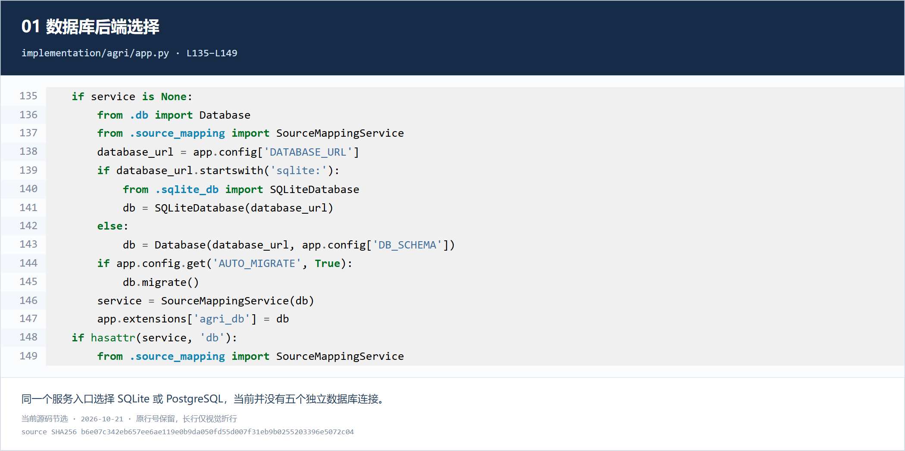
结构组成与功能
- database_url
- 读取配置中的数据库地址；默认本地地址在同文件第116行指向 data/agri.db。
- SQLiteDatabase / Database
- sqlite: 地址进入本地开发适配器，其余地址进入 PostgreSQL 适配器。
- db.migrate 与 SourceMappingService
- 先执行数据库迁移，再把同一个数据库连接边界交给业务服务。
为什么这样保存：后端适配和业务服务分开，便于按接口切换实现；切换配置不等于已经迁移数据。
修改时要注意：改变数据库地址前，需要迁移、备份恢复验证和实际后端验收。PostgreSQL 已有代码分支，但未完成本项目的实库验收。
JSON 输入与统一写入入口
JSON 是接口载荷格式，网页表单和批量脚本都可以自动生成它。
implementation/agri/app.py · L242–L258 · 打开仓库源码 · 原文文本
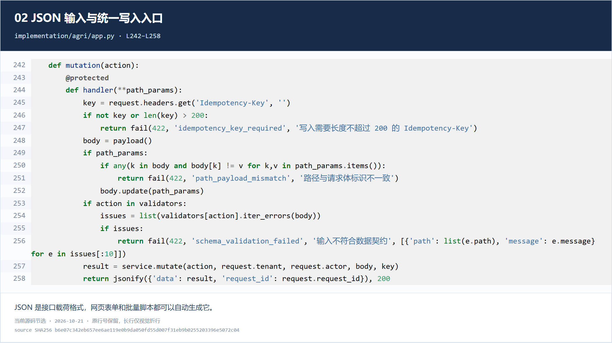
结构组成与功能
- @protected
- 请求先经过访问身份检查。
- Idempotency-Key
- 标识同一次业务请求的重试，配合服务层防止重复写入。
- payload / validators
- 解析请求体并检查字段结构；JSON 能解析不代表符合本体约束。
- service.mutate
- 进入统一的业务校验和数据库事务；jsonify 仅负责把响应编码为 JSON。
为什么这样保存：便于不同语言、设备平台和网页以一致格式交互；无需让外部程序直接连接数据库写表。
修改时要注意：改字段要同步修改契约、调用方和校验逻辑。替换 app.py 是更换程序，不是导入业务数据；鉴权和幂等边界不能省略。
本体属性定义的 JSON 结构
这是可版本化的定义文件节选，不是正在运行的数据库，也不是农场实际记录。
implementation/integrations/liangzihu/package-bundle.json · L44–L67 · 打开仓库源码 · 原文文本
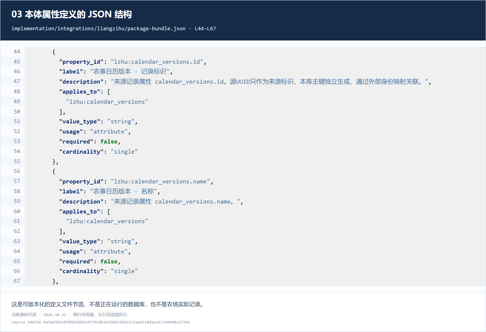
结构组成与功能
- property_id 与 label
- 前者是稳定属性标识，后者是显示名称，不能混用。
- applies_to
- 列出属性允许用于哪些类，例如农事日历版本类。
- value_type / usage
- 规定值类型和用途；这里是字符串型对象属性。
- required / cardinality
- 规定是否必填、单值还是多值。
为什么这样保存：嵌套对象和数组适合表达类、属性、关系及约束；新增领域属性在既有通用结构范围内通常无需增加数据库列。
修改时要注意：改磁盘文件不会自动改已注册定义。语义变化应生成新包版本、验证并通过注册接口安装；领域包显示名可使用包标签接口，属性定义的label变化仍需版本化。此文件为生成产物，还需同步生成源与清单。
对象固定字段与 JSONB 扩展属性
固定列管理身份和版本，JSONB 管理种类不同、变化较多的属性。
implementation/migrations/001_core.sql · L26–L41 · 打开仓库源码 · 原文文本
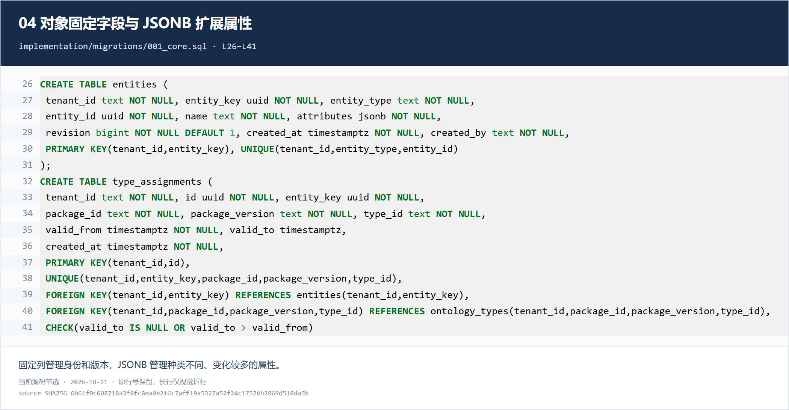
结构组成与功能
- tenant_id / entity_key
- 组成主键；tenant_id 隔离租户，entity_key 是稳定对象身份。
- entity_type / name / revision
- 保存对象身份类型、名称和修订号。名称不是唯一身份。
- attributes jsonb
- 保存扩展属性内容；JSONB 合法不代表属性的农业语义正确，还需图05的校验。
- type_assignments
- 把对象关联到精确的领域包版本和语义类，并记录分类有效期；SQL 外键维护引用。
为什么这样保存：不同类可具有不同属性，避免为每个领域建立大量稀疏列；身份、引用和版本仍由关系模型约束。
修改时要注意：频繁过滤、关联或强约束的字段应评估固定列或独立子表。JSONB 并不自动更快，也不自动建立合适索引；不可绕过服务直接修改属性。
类 属性 时间和版本如何对应
后端根据对象在指定时点的分类，寻找唯一适用的属性定义。
implementation/agri/ontology_core.py · L158–L177 · 打开仓库源码 · 原文文本
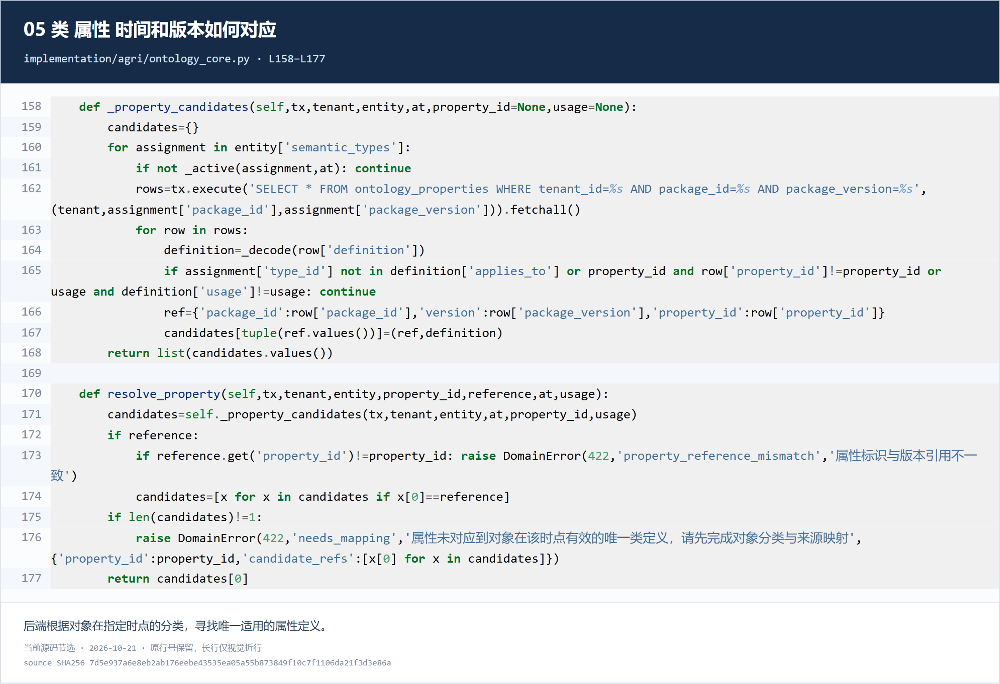
结构组成与功能
- entity.semantic_types 与 _active
- 逐个检查对象的语义类，以及分类在查询时点是否有效。
- ontology_properties 查询
- 按租户、领域包和精确版本读取属性定义。
- applies_to / property_id / usage
- 进一步检查适用类、属性身份和用途。
- len(candidates) != 1
- 没有匹配或存在多个匹配都要求明确映射，不凭同名字段猜测。
为什么这样保存：灵活的 JSON 内容仍受到版本化本体约束。值类型、单位、枚举和范围的校验见同文件第32–69行。
修改时要注意：这属于确定性语义校验，不是 OWL 自动推理。新增属性必须先登记定义并分类对象；历史语义改变应发新版本。
关系记录把对象 时间和证据放在一起
关系本身具有独立身份，时间没有被单独拆到一个时间库。
implementation/migrations/001_core.sql · L77–L94 · 打开仓库源码 · 原文文本
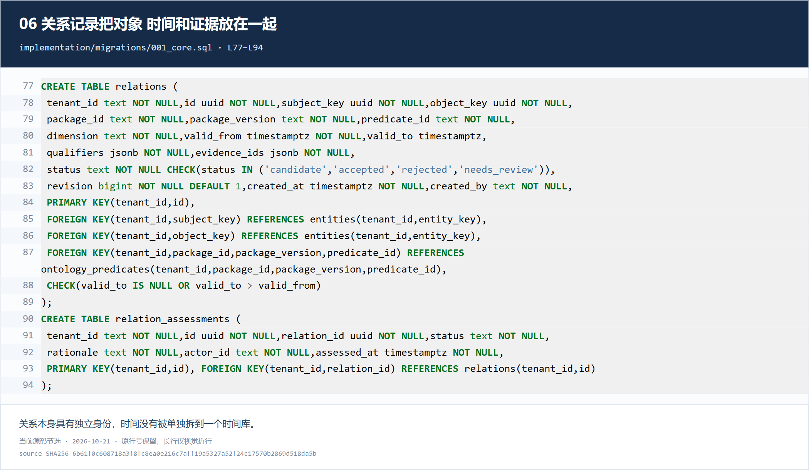
结构组成与功能
- subject_key / object_key
- 指明关系的两个对象端点，并以外键关联实体。
- package_id / package_version / predicate_id
- 明确使用哪个版本的关系语义。
- valid_from / valid_to
- 描述关系记录声明的有效区间；来源FK导入目前按来源快照时间开闭，不能据此认定业务关系真实发生或结束时间。CHECK 要求结束晚于开始。
- qualifiers / evidence_ids / status
- 保存限定条件、证据引用与待核实或已采纳状态。证据ID数组不是逐项SQL外键。
- relation_assessments
- 另表保存审核状态、理由、操作者和审核时间。
为什么这样保存：JSONB 适合限定条件和可变证据列表，固定列负责主干关系、时间和引用。
修改时要注意：当前主干时间是有效区间，加修订和创建时间；不能把它称为完整双时态重建。证据引用依赖服务检查与辅助关联表，需保持这些校验。
观测值与测量时间共同保存
观测和断言分别建表：读数与来源作出的说法具有不同身份和状态。
implementation/migrations/001_core.sql · L51–L69 · 打开仓库源码 · 原文文本
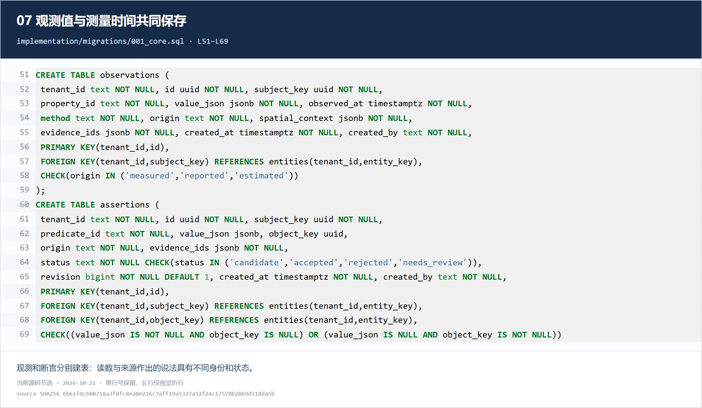
结构组成与功能
- observations.subject_key / property_id
- 标明观测哪个对象的哪个属性。
- value_json / observed_at / method
- 记录带单位等结构的结果、观测时间与方法。created_at 是系统创建时间。
- origin / evidence_ids
- 区分 measured、reported、estimated，并连接证据。
- assertions
- 表示来源提出的说法；用 value_json 或 object_key 表达值或对象，CHECK 要求两者恰有一个，状态默认通过服务管理。
为什么这样保存：观测结果可以同时携带值、单位和情境，不需把读数拆成彼此没有关联的文件。
修改时要注意：时间字段本身不需要独立时序库。高频读数的分区和索引应依据负载；当前断言缺完整顶层时态字段，不应宣称具备全库历史查询。
来源身份映射与修订快照
来源主键和本体主键分开，历史快照保留当时的来源内容与映射版本。
implementation/migrations/005_source_mapping.sql · L15–L41 · 打开仓库源码 · 原文文本
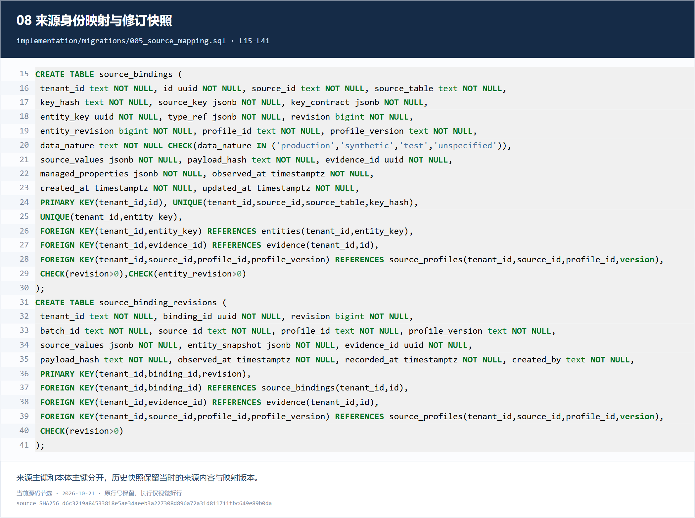
结构组成与功能
- source_id / source_table / source_key
- 共同定位来源系统中的记录；复合主键可用 JSON 对象表达。
- entity_key / type_ref / profile_version
- 绑定本体对象身份、类型引用和映射版本。
- data_nature / payload_hash / evidence_id
- 区分生产、合成和测试数据，并记录摘要与证据。
- source_binding_revisions
- 以绑定ID和修订号保存 source_values、entity_snapshot、observed_at 和 recorded_at。
为什么这样保存：不同源表可有不同字段和复合键，JSONB 可以保留这些差异，同时用关系键把版本连接起来。
修改时要注意：这里 observed_at 是来源快照时间，不自动等于生产事件发生时间。服务按修订追加历史，但本段DDL没有禁止历史行UPDATE/DELETE的触发器；不能称数据库强制不可篡改。
文件原件与结构化证据分开保存
原文件写入私有目录，数据库只登记文件位置、摘要和证据元数据。
implementation/agri/ingestion.py · L93–L119 · 打开仓库源码 · 原文文本
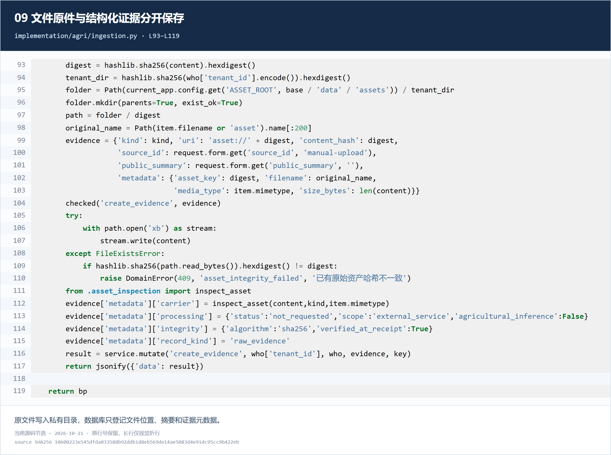
结构组成与功能
- digest / tenant_dir / path
- 内容哈希作为资源键，租户目录分开；同内容可复用原件。
- evidence 字典
- 组织 kind、uri、content_hash、source_id 和 metadata；这是 Python 字典，随后进入JSON编码与数据库写入。
- metadata
- 保留原文件名、媒体类型、字节数和资源键。
- path.open 与摘要核对
- 新文件以排他方式写入，已有文件先核对完整性；载体检查不等于图像识别。
为什么这样保存：小型元数据适合 JSON，图片和视频字节保留为文件，避免把全部二进制塞进业务记录。
修改时要注意：原件字节和数据库事务不是一个跨存储原子事务。替换哈希路径下文件会破坏完整性，应登记新资源版本；恢复也要同时考虑数据库与原件。
当前 RDF 是有限的交换投影
查询结果被编码为 JSON-LD，当前没有因此自动获得 RDF 原生数据库。
implementation/agri/exchange.py · L16–L34 · 打开仓库源码 · 原文文本
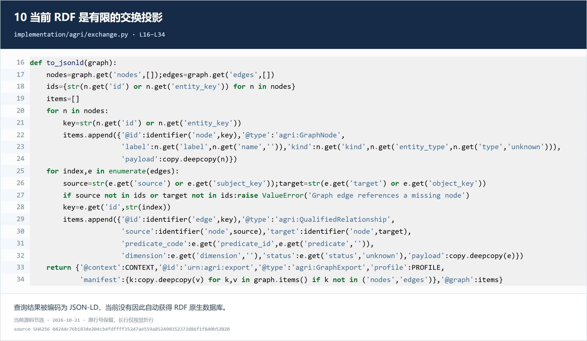
结构组成与功能
- nodes / edges 与 identifier
- 读取有界实例图，为节点和关系生成标识。
- GraphNode / QualifiedRelationship
- 用本项目固定交换类型封装节点与有附加信息的关系。
- predicate_code / payload
- 业务关系代码作为字段保存，完整原图记录放在JSON载荷中。
- @context / @graph / manifest
- 组织交换语义、图内容以及截断和缺口等元数据。
为什么这样保存：消费者可以保留并重建本项目图字典；JSON-LD 提供标识和引用的表达方式。
修改时要注意：不是完整本体或全库导出，没有通用SPARQL/OWL能力。替换导出文件不会更新主库；变更格式需升级交换profile，不能只修改后缀。
SQL迁移为什么不能随手替换
SQL 文件记录数据库结构的演进步骤，不是数据库当前数据本身。
implementation/agri/db.py · L35–L60 · 打开仓库源码 · 原文文本
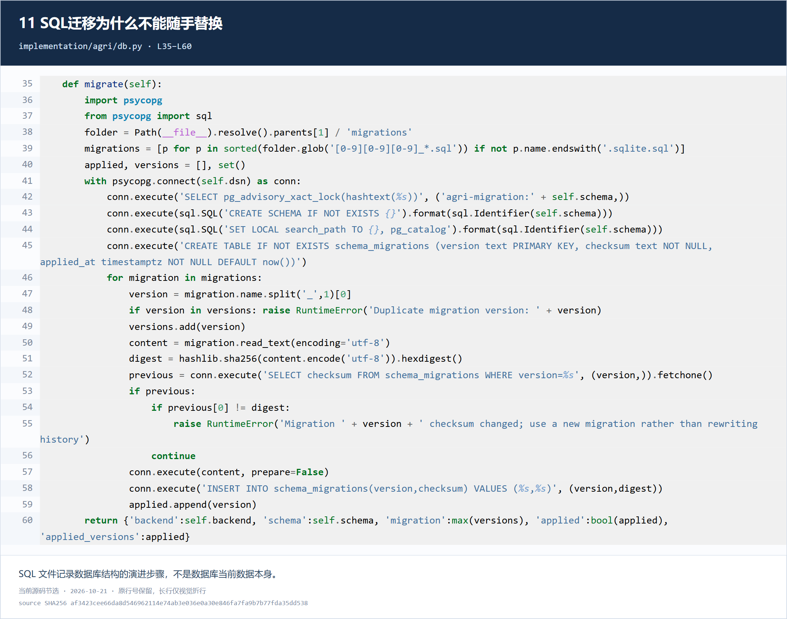
结构组成与功能
- 编号与迁移目录
- 读取三位编号的PostgreSQL迁移，排除SQLite专用脚本。
- schema_migrations
- 在数据库登记执行版本、内容摘要和执行时间。
- hashlib.sha256 / previous
- 计算迁移文件摘要，与已执行历史对比。
- checksum changed
- 若旧迁移被改写则停止，要求新增迁移文件，避免历史结构不一致。
为什么这样保存：版本记录与校验摘要使结构升级可审查。便于替换的代码模块和必须保留历史的迁移文件，需要区别管理。
修改时要注意：新增结构应新增编号迁移，并维护SQLite与PostgreSQL对应实现。修改旧SQL文件不会自动更新已有表，反而会触发校验失败。
前端模块与API目录不是物理分库
多个页面从不同API读数据，不代表它们分别使用独立数据库。
implementation/web/app.js · L29–L44 · 打开仓库源码 · 原文文本
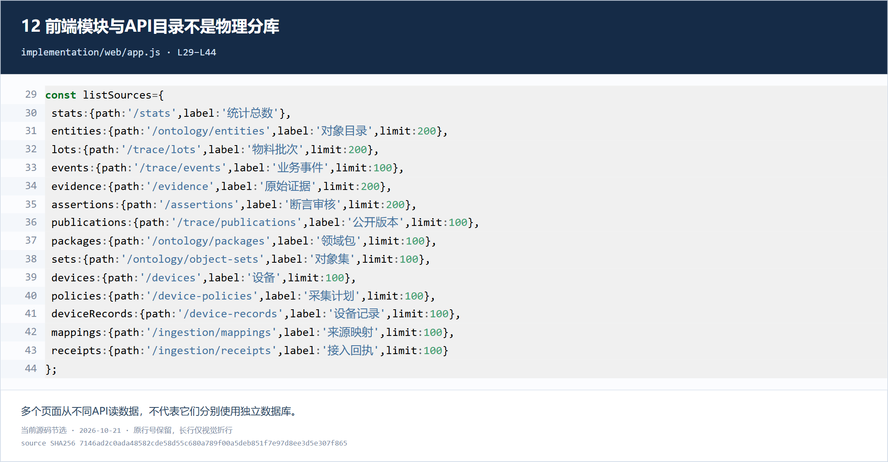
结构组成与功能
- stats / entities / events / evidence
- 为总览、对象、事件和证据分别声明数据入口。
- path / label / limit
- 规定请求地址、可读名称和每次查询上限。
- packages / mappings
- 前端另行读取本体包和旧接入映射；新来源integration接口不在这段目录中。
为什么这样保存：这是JavaScript对象配置，不是JSON数据库。统一JSON响应便于前端按模块读取，但每类内容仍有不同语义。
修改时要注意：前端模块拆分可改善阅读和维护，不必先拆数据库。改页面文件不会创建缺少的后端能力，发布时还要检查接口版本和缓存。
哪些文件可以怎样更换
| 文件或内容 | 正确操作 | 生效条件与影响 |
|---|---|---|
| Python / JavaScript 程序 | 可以按模块升级部署 | 遵守接口契约，检查调用方、服务重载、前端缓存及相关验证 |
| 领域包和来源映射 JSON | 作为版本化定义交付 | 验证后通过注册接口安装；领域包显示名可走包标签接口；来源映射内容（含label）变化需新profile版本 |
| 已经执行的 SQL 迁移 | 保留原文件，新增迁移 | 旧摘要变化会被拒绝；同时维护PostgreSQL与SQLite版本 |
| JSONL / JSON 数据导入文件 | 通过预检和导入接口处理 | 保留来源主键、数据性质、快照时间和幂等回执，不是复制到目录就生效 |
| SQLite .db 数据文件 | 通过受控备份恢复流程更换 | 需一致备份、版本匹配、完整性验证及原件配套；不要在运行中直接覆盖 |
| PostgreSQL 数据 | 通过数据库迁移、备份恢复或导入工具管理 | .sql脚本不是活动数据库文件，不能靠替换脚本替换存量数据 |
| 原件和RDF导出文件 | 原件新建版本；导出可重新生成 | 不要改写哈希资源；导出是副本，不会自动反向写回主库 |
建议优先整理本体定义、对象关系、观测事件、来源映射、证据资源和数据库基础设施的模块边界，配套代码索引及接口。五类存储能力应有明确职责，是否物理分库再由负载和隔离需求决定。此建议尚未实施。
目前已有来源修订历史和时间字段，但完整历史状态重建、GIS接入、时序专用优化和原生RDF查询仍不完整。文件模块更清楚，与这些能力是否完成，是两件需要分别验收的事。
阅读顺序与依据
先看04对象、06关系、08历史，理解数据主干；再看03定义、05校验、02输入；最后看09资源、10交换和11迁移。
本次为静态源码核查及截图一致性验证，没有运行或宣称通过新的后端、PostgreSQL或现场验收。以 sources.json 中的内容摘要定位本轮源码；仓库 main 后续可能变化。